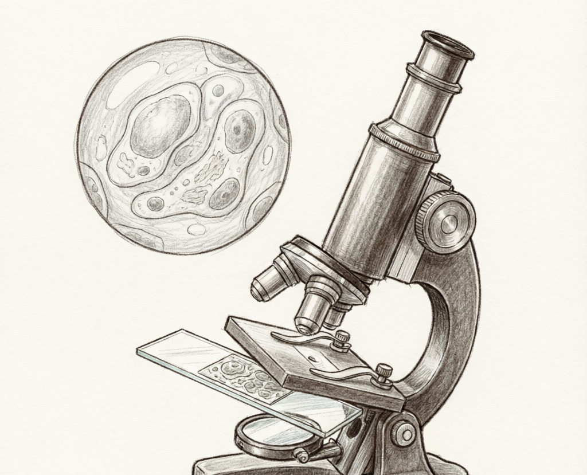
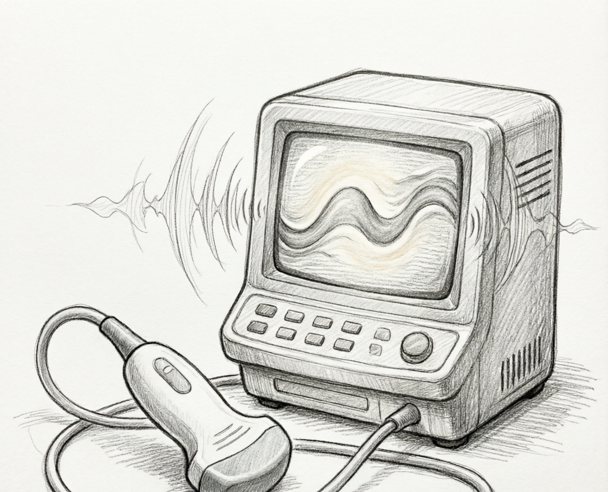
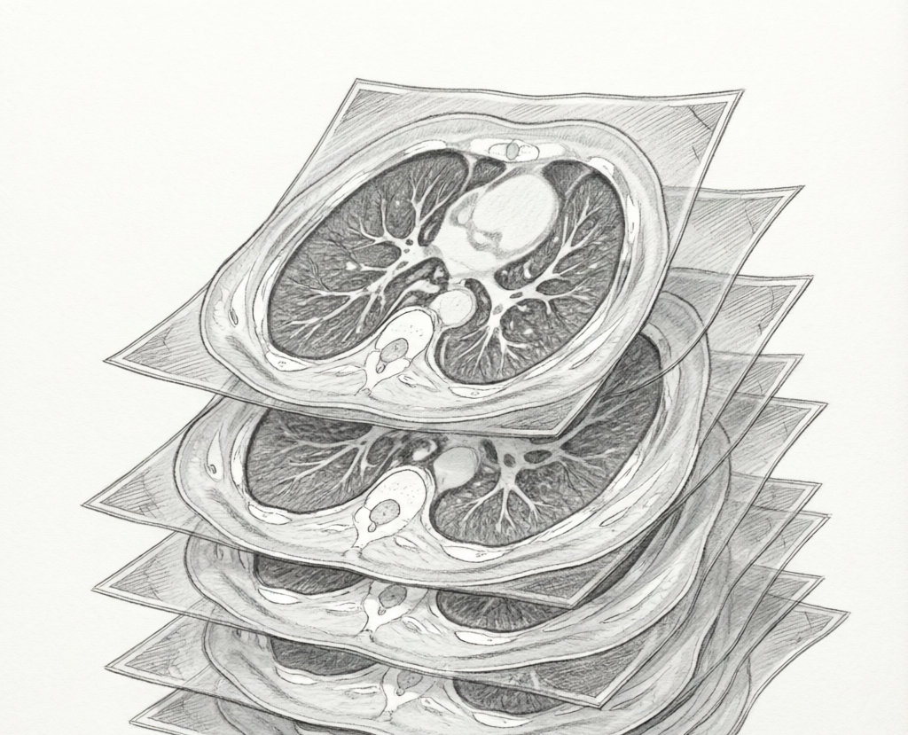

智能体 = harness + 模型。模型负责推理，由你自带；Glaux 是 harness， 决定模型看到什么、能做什么、怎样算对、跨回合积累什么。
模型负责推理，并且在持续商品化。带单位的测量、说得清出处的结论、 能原样重跑的过程不会随模型变强自动出现，它们来自环境。
读取多种模态、多种格式的图像与视频，带上物理语义：像素间距、通道、帧时间、采样率。决定给模型呈现哪一部分：切块、抽帧、裁剪、叠加，以及与画面对齐的音频区间。对话预览版只支持图片附件。
分割、测量、跟踪、重建等工具，集成专用模型，带单位、尺度与护栏。当前对话预览版未开放。
结论可溯源到帧与区域、可原样重跑、多种方法相互印证、人工复核；有标准答案时计算指标。当前对话预览版未开放。
一次分析是一个回合。经过验证的轨迹与人工校正沉淀为案例库，供后续任务检索、评测与改进。当前对话预览版未开放。
本地开发默认完整版，由前端、智能体运行时、Python 后端三个进程组成，make -j3 dev 拉起。 对外发行的 Docker 对话预览版只含静态前端与智能体运行时。
与智能体对话、查看图像、核对每一步结果。完整版提供舞台与图谱，对话预览版只提供对话界面。
唯一与模型通信的进程：规划、执行、检查、修正，通过工具调用环境能力，模型密钥只保存在这里。
图像处理：读取、解码、分割、测量，结果带操作记录；视频处理建设中。只在本地完整版中运行。
格式决定怎么读文件，模态决定怎么解码、用什么单位与尺度、什么算对。 视频中的帧、时间、轨迹与事件同样是分析对象；视频自带的音频与画面共享同一条时间轴，同属观测内容。新模态按同一接口接入。 以下是项目覆盖的领域，当前对话预览版只支持常见图片格式。
可见光拍摄 · PNG / JPEG / WebP · MP4

明场与荧光显微 · 病理全切片 · TIFF / SVS / NDPI

超声、X 线、CT、MRI · DICOM / NIfTI

CT 体数据 · 超声动态 · 显微延时
Glaux 负责从图像与视频到理解，再到可计算的表征。拿表征做决策与规划，由你在 Glaux 之上自建。 生物医学方向只做研究，不做受监管的临床诊断。
当前提供 Docker 对话预览版，自带参考智能体，也可以接入你自己的模型。完整版从源码本地运行。